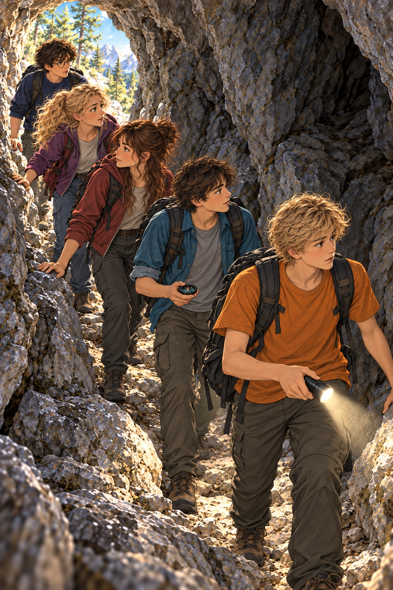
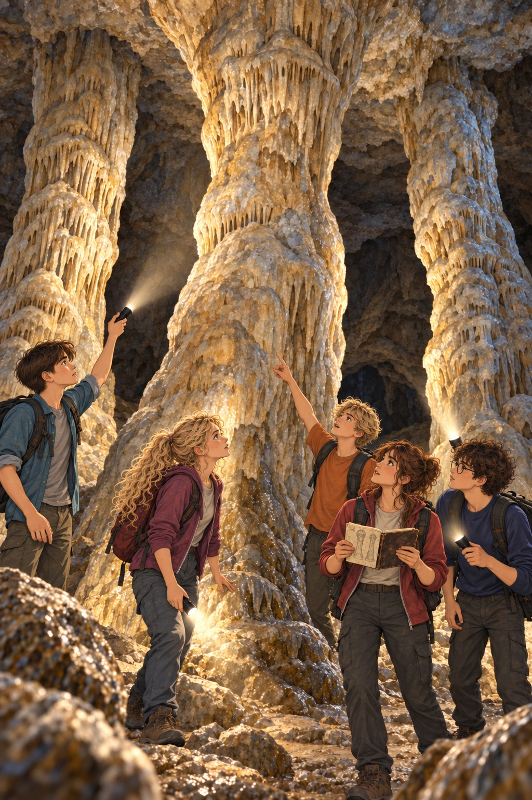
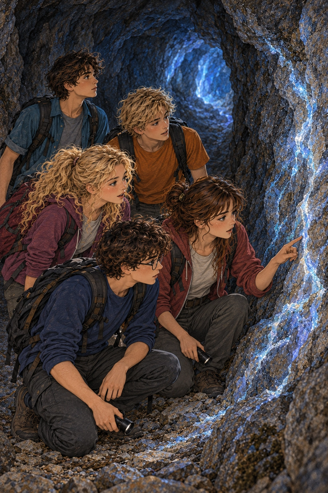

La entrada en la cueva
Las columnas gigantes
La primera luz azul5 FUERA DEL MAPA · MONTE PERDIDO
Toca una ilustración para ampliarla.

La entrada en la cueva
Las columnas gigantes
La primera luz azul